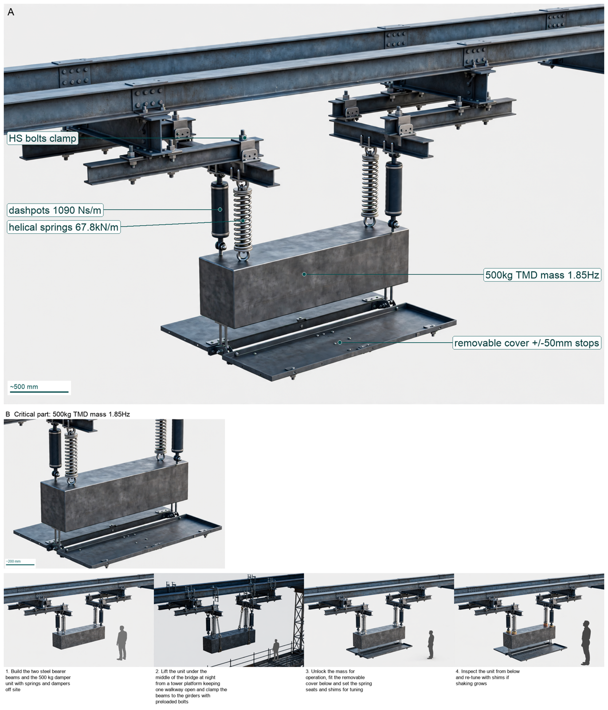

Hardware Scientist — concept report
Vibration retrofit for a lively pedestrian footbridge
A 40 m pedestrian footbridge bounces uncomfortably when crowds walk over it. Its first vertical bending mode is about 1.9 Hz with very low damping. Design a retrofit concept that brings the vibration down to a comfortable level without changing how the bridge looks from the deck.
- Span 40 m; first vertical mode about 1.9 Hz
The concept

A 500 kg weight hung on tuned springs and dampers under the middle of the bridge sways to calm crowd shaking to a gentle feel.
Load: pedestrians -> deck -> damper mass | Measured: deck acceleration -> comfort check
Three decisive design choices
- Mount 500 kg tuned mass at midspan under deck tuned just below 1.9 Hz to 1.85 Hz
- Support on helical springs plus viscous dashpots sized for 72.3 mm sag and 20.1 mm crowd stroke with plus-minus 50 mm stops
- Clamp with bolted transverse bearers with staged night install and removable cover for re-tuning without deck change
Will field-measured first-mode frequency, modal mass and damping confirm the assumed 20000 kg at 1.9 Hz tuning so dense-crowd response stays below 1.0 m/s2 with clearance?
What happened
How the picture was made

What the critic flagged:
- callout: label 'Helical Support Springs' with leader dot ending on black cylindrical viscous damper
What the segmenter saw (SAM 3.1)
Code asked SAM for each part by a plain phrase and measured the boxes against what the design expects; the critic received the differences as evidence.

How the council changed
The council's instructions were not rewritten in this run.
References
0 sources found by the council's searches and the prior-art check (click to open)
Files
Run 20261102-210720_vibration-retrofit-for-a-lively-pedestri · total cost $1.95 · conceptual illustration — physical performance not established.